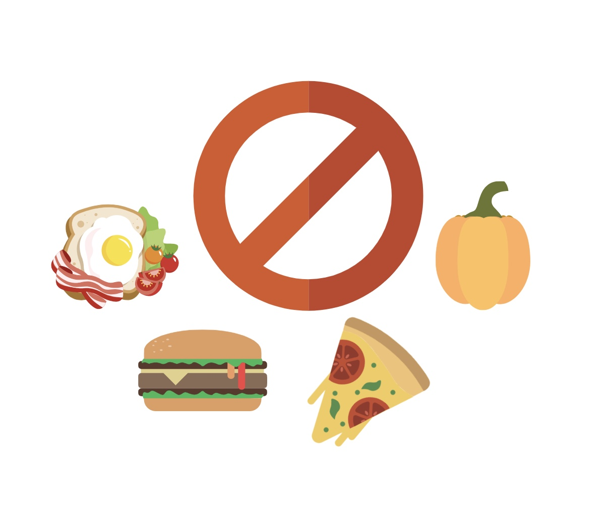
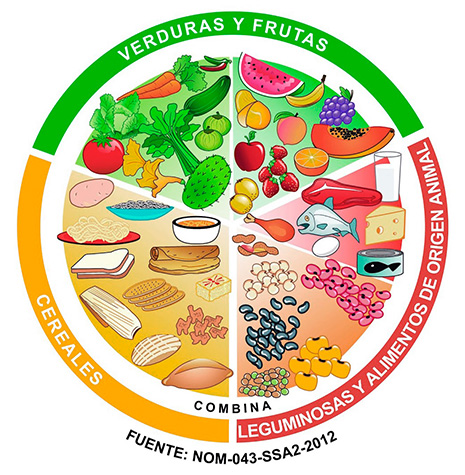

QUENES SOMOS
Somos la 5° organización del mundo con mayor impacto en el bienestar
social, Somos una de las ONG más grandes del mundo. A través del
aprendizaje activo en educación nutricional, preparamos a los jóvenes
para que sean protagonistas de su futuro.

EL DESAFÍO
Los trastornos de la alimentación más frecuentes como la anorexia
nerviosa, la bulimia nerviosa, el trastorno por atracón y el trastorno
por evitación y restricción de la ingesta de alimentos.
BENEFICIOS
Seguir una alimentación sana tiene muchos beneficios entre los que
destacan los siguientes: obtener energía, proteger el corazón, mejorar
el cerebro, reduce el estrés, fortalece los huesos, mejora el sistema
inmune.

IMPACTO
Una dieta saludable ayuda a protegernos de la malnutrición en todas
sus formas, así como de las enfermedades no transmisibles
LA NUTRICION
La nutrición integral es una manera de alcanzar un estado óptimo de
salud y bienestar a través de alimentos y hábitos positivos. Su objetivo
principal es equilibrar el funcionamiento de tu cuerpo para mantener la
salud en todo tu organismo. Hablamos de bienestar nutricional cuando
nuestro cuerpo recibe los nutrientes que necesita. Consiste en el
equilibrio entre la ingesta y uso de alimentos, así como la absorción de
los nutrientes útiles.